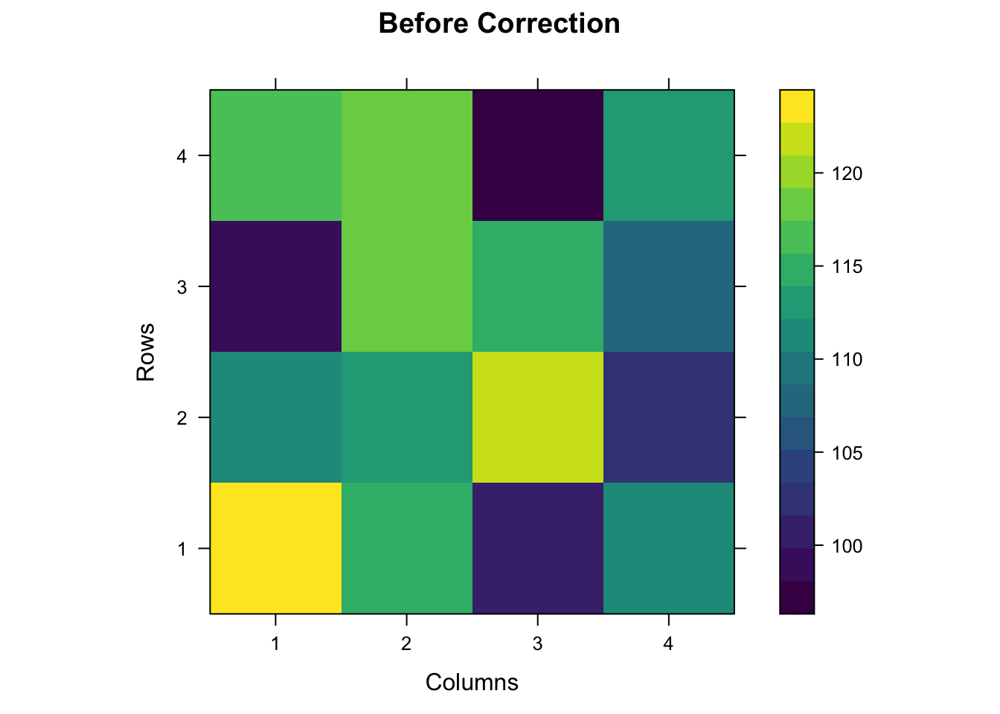
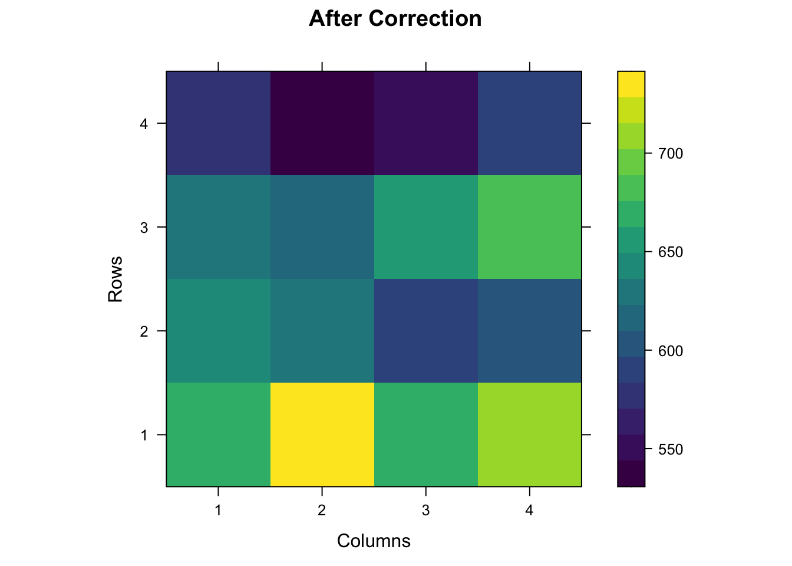

Last updated: 2021-04-07
Checks: 6 1
Knit directory: Autoregressive/
This reproducible R Markdown analysis was created with workflowr (version 1.6.2). The Checks tab describes the reproducibility checks that were applied when the results were created. The Past versions tab lists the development history.
The R Markdown file has unstaged changes. To know which version of the R Markdown file created these results, you’ll want to first commit it to the Git repo. If you’re still working on the analysis, you can ignore this warning. When you’re finished, you can run wflow_publish to commit the R Markdown file and build the HTML.
Great job! The global environment was empty. Objects defined in the global environment can affect the analysis in your R Markdown file in unknown ways. For reproduciblity it’s best to always run the code in an empty environment.
The command set.seed(20210407) was run prior to running the code in the R Markdown file. Setting a seed ensures that any results that rely on randomness, e.g. subsampling or permutations, are reproducible.
Great job! Recording the operating system, R version, and package versions is critical for reproducibility.
Nice! There were no cached chunks for this analysis, so you can be confident that you successfully produced the results during this run.
Great job! Using relative paths to the files within your workflowr project makes it easier to run your code on other machines.
Great! You are using Git for version control. Tracking code development and connecting the code version to the results is critical for reproducibility.
The results in this page were generated with repository version 1b8ca65. See the Past versions tab to see a history of the changes made to the R Markdown and HTML files.
Note that you need to be careful to ensure that all relevant files for the analysis have been committed to Git prior to generating the results (you can use wflow_publish or wflow_git_commit). workflowr only checks the R Markdown file, but you know if there are other scripts or data files that it depends on. Below is the status of the Git repository when the results were generated:
Ignored files:
Ignored: .DS_Store
Ignored: .Rhistory
Ignored: .Rproj.user/
Untracked files:
Untracked: code/prepareData.R
Unstaged changes:
Modified: analysis/Autoregressive.Rmd
Note that any generated files, e.g. HTML, png, CSS, etc., are not included in this status report because it is ok for generated content to have uncommitted changes.
These are the previous versions of the repository in which changes were made to the R Markdown (analysis/Autoregressive.Rmd) and HTML (docs/Autoregressive.html) files. If you’ve configured a remote Git repository (see ?wflow_git_remote), click on the hyperlinks in the table below to view the files as they were in that past version.
| File | Version | Author | Date | Message |
|---|---|---|---|---|
| html | 1b8ca65 | chris263 | 2021-04-07 | Build site. |
| Rmd | 43ed142 | chris263 | 2021-04-07 | Autoregressive for spatial correction |
Install packages, start the README.md, set the random seed
Here I am modeling for spatial correction. The key is to calculate the R matrix which is a Kronecker product between correlation rows and correlation columns.
Simulating trial with 4 varieties and 4 replications.
#Creating a matrix with RCBD trial
library(agricolae)
T=matrix("NA",16,4)
trt <- c("tr1","tr2","tr3","tr4")
rep <- 4
myRCBD <- design.rcbd(trt,r=rep, seed=-513, serie=1)
book2<- zigzag(myRCBD)
# Creating the trial matrix
j=1
for( i in 1:nrow(book2)){
T[i,1] <- paste("",book2[i,3],sep="")
T[i,3] <- book2[i,2]
T[i,2] <- j
j=j+1
if(j>4){
j=1
}
}
T <- noquote(T[order(T[,1]),]) # Sorting by treatment in this case genotypes
# Incidence Matrix
Xf=matrix(0,16,4)
Xf[,1]=c(1,1,1,1,0,0,0,0,0,0,0,0,0,0,0,0) # Variet 1 in each replication
Xf[,2]=c(0,0,0,0,1,1,1,1,0,0,0,0,0,0,0,0) # Variet 2 in each replication
Xf[,3]=c(0,0,0,0,0,0,0,0,1,1,1,1,0,0,0,0) # Variet 3 in each replication
Xf[,4]=c(0,0,0,0,0,0,0,0,0,0,0,0,1,1,1,1) # Variet 4 in each replication
Xf [,1] [,2] [,3] [,4]
[1,] 1 0 0 0
[2,] 1 0 0 0
[3,] 1 0 0 0
[4,] 1 0 0 0
[5,] 0 1 0 0
[6,] 0 1 0 0
[7,] 0 1 0 0
[8,] 0 1 0 0
[9,] 0 0 1 0
[10,] 0 0 1 0
[11,] 0 0 1 0
[12,] 0 0 1 0
[13,] 0 0 0 1
[14,] 0 0 0 1
[15,] 0 0 0 1
[16,] 0 0 0 1# calculating the rank of the matrix
Matrix::rankMatrix(Xf) # Check that the rank is 4 and Xf has 4 columns. It works when getting the inverse matrix.[1] 4
attr(,"method")
[1] "tolNorm2"
attr(,"useGrad")
[1] FALSE
attr(,"tol")
[1] 3.552714e-15# Calculating X'X
XftXf = t(Xf)%*%(Xf)
XftXf [,1] [,2] [,3] [,4]
[1,] 4 0 0 0
[2,] 0 4 0 0
[3,] 0 0 4 0
[4,] 0 0 0 4#Simulating data for each treatment
beta2=c(100,110,115,120) # this is a vector with 4 means for each variety
y=Xf%*%beta2+rnorm(16,0,2) # here I am simulating 16 values for y
Tnew <- noquote(data.frame(cbind(T[,1:3], y)))
colnames(Tnew) <- c("Treatment", "Col", "Row", "Yield")
source(here::here("code/prepareData.R"))
RCM = createCorrelation(Tnew$Row) #Calling correlation per row
CCM = createCorrelation(Tnew$Col) #Calling correlation per col
# Calculating variance
p=rep(1,nrow(Tnew)) #vector
s = as.numeric(Tnew$Yield)
varS = (t(s - mean(s))%*%(s - mean(s)))/(length(s)-1)
# Calculating the autoregressive vector
# varS * RCM %x% CCM (where %x% means kronecker product)
R = varS[1] * RCM %x% CCM
corrected <- R %*% p #Corrected values per plot
finalTable <- cbind(Tnew, corrected)
knitr::kable(finalTable)| Treatment | Col | Row | Yield | corrected |
|---|---|---|---|---|
| tr1 | 3 | 1 | 100.897651585456 | 673.8103 |
| tr1 | 4 | 2 | 102.01373736703 | 596.8526 |
| tr1 | 1 | 3 | 99.6210757882208 | 625.7016 |
| tr1 | 3 | 4 | 98.0381261466173 | 550.6882 |
| tr2 | 2 | 1 | 115.468083078358 | 728.5906 |
| tr2 | 1 | 2 | 110.970770219723 | 645.3763 |
| tr2 | 4 | 3 | 108.066338902473 | 676.5706 |
| tr2 | 4 | 4 | 112.640539430942 | 595.4587 |
| tr3 | 4 | 1 | 111.710771133088 | 705.3303 |
| tr3 | 2 | 2 | 113.849822420217 | 624.7727 |
| tr3 | 3 | 3 | 114.79977538529 | 654.9711 |
| tr3 | 1 | 4 | 116.640195441891 | 576.4487 |
| tr4 | 1 | 1 | 122.731089529131 | 665.2083 |
| tr4 | 3 | 2 | 121.514723634061 | 589.2331 |
| tr4 | 2 | 3 | 119.135570955118 | 617.7138 |
| tr4 | 2 | 4 | 118.327525213993 | 543.6580 |
z <- prepareHeatmap(finalTable$Yield)
coul <- viridis(100)
class(z) <- "numeric"
levelplot( z, xlab="Columns", ylab="Rows", main = "Before Correction", col.regions=coul)
w <- prepareHeatmap(finalTable$corrected)
coul <- viridis(100)
class(w) <- "numeric"
levelplot(w, xlab="Columns", ylab="Rows", main = "After Correction", col.regions=coul)
I am using lme4 in order to get genotypic and residual variances.
# Prepareing data for analysis
analysisData <- cbind(book2[order(book2$trt),],finalTable$Yield,finalTable$corrected)
colnames(analysisData) <- c("plot","block","trt","Yield","corrected")
analysisData$Yield <- as.numeric(analysisData$Yield)
#Running lme4 with treatment as random effect and block as fixed.
library("lme4") Loading required package: Matrix# First with no correction
model_yield <- lmer( Yield ~ (1|trt) + block, na.action = na.exclude, data=analysisData)
variance_yield = as.data.frame(VarCorr(model_yield))
gvar_yield <- variance_yield[1,"vcov"] # Genotypic variance
resvar_yield <- variance_yield[2,"vcov"] # residual variance
#Heritability before correction
h2_yield <- gvar_yield/(gvar_yield+resvar_yield)
# Here with corrected values
model_corrected <- lmer(corrected ~ (1|trt) + block, na.action = na.exclude, data=analysisData)
variance_corrected = as.data.frame(VarCorr(model_corrected))
gvar_corrected <- variance_corrected[1,"vcov"] # Genotypic variance
resvar_corrected <- variance_corrected[2,"vcov"] # Residual variance
# Heritability after correction
h2_corrected <- gvar_corrected/(gvar_corrected+resvar_corrected)
#Results
h2_yield[1] 0.9255681h2_corrected[1] 0.9929156
sessionInfo()R version 4.0.3 (2020-10-10)
Platform: x86_64-apple-darwin17.0 (64-bit)
Running under: macOS Big Sur 10.16
Matrix products: default
BLAS: /Library/Frameworks/R.framework/Versions/4.0/Resources/lib/libRblas.dylib
LAPACK: /Library/Frameworks/R.framework/Versions/4.0/Resources/lib/libRlapack.dylib
Random number generation:
RNG: Super-Duper
Normal: Inversion
Sample: Rejection
locale:
[1] en_US.UTF-8/en_US.UTF-8/en_US.UTF-8/C/en_US.UTF-8/en_US.UTF-8
attached base packages:
[1] stats graphics grDevices utils datasets methods base
other attached packages:
[1] lme4_1.1-26 Matrix_1.3-2 leaflet_2.0.4.1 viridisLite_0.3.0
[5] lattice_0.20-41 agricolae_1.3-3
loaded via a namespace (and not attached):
[1] statmod_1.4.35 tidyselect_1.1.0 xfun_0.20 purrr_0.3.4
[5] splines_4.0.3 haven_2.3.1 labelled_2.7.0 vctrs_0.3.6
[9] generics_0.1.0 miniUI_0.1.1.1 htmltools_0.5.1 yaml_2.2.1
[13] AlgDesign_1.2.0 rlang_0.4.10 nloptr_1.2.2.2 later_1.1.0.1
[17] pillar_1.4.7 glue_1.4.2 lifecycle_0.2.0 questionr_0.7.4
[21] stringr_1.4.0 combinat_0.0-8 workflowr_1.6.2 htmlwidgets_1.5.3
[25] evaluate_0.14 knitr_1.30 forcats_0.5.0 fastmap_1.0.1
[29] httpuv_1.5.4 crosstalk_1.1.1 highr_0.8 Rcpp_1.0.6
[33] xtable_1.8-4 promises_1.1.1 mime_0.9 fs_1.5.0
[37] klaR_0.6-15 hms_0.5.3 digest_0.6.27 stringi_1.5.3
[41] dplyr_1.0.2 shiny_1.5.0 rprojroot_2.0.2 grid_4.0.3
[45] here_1.0.1 tools_4.0.3 magrittr_2.0.1 tibble_3.0.4
[49] cluster_2.1.0 crayon_1.3.4 whisker_0.4 pkgconfig_2.0.3
[53] MASS_7.3-53 ellipsis_0.3.1 minqa_1.2.4 rmarkdown_2.6
[57] rstudioapi_0.13 boot_1.3-25 R6_2.5.0 nlme_3.1-151
[61] git2r_0.28.0 compiler_4.0.3